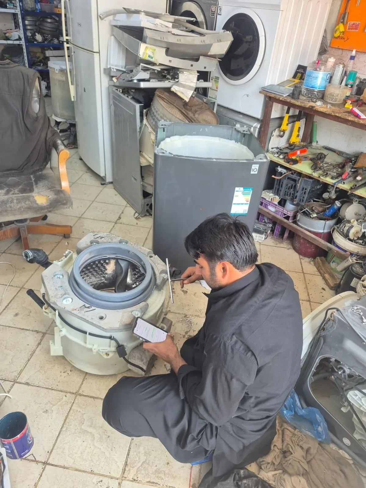

5 Signs Your Washing Machine Needs Repair

Most washing machine faults warn you before they turn into a full breakdown. Catch the signs early and the repair is usually simpler and cheaper, with less water on your floor.
1. Loud banging or grinding during the spin cycle
A little wobble now and then is normal, especially with an uneven load. A loud mechanical bang or grinding noise is different. It usually points to worn drum bearings or a damaged spider arm, and it gets worse the longer it is left.
2. The machine takes much longer to drain
If a cycle that used to take an hour now drags on, or clothes come out sitting in water, a blocked drain pump or filter is the most common cause. Now and then the fault is electrical rather than a blockage, which is where a proper diagnosis matters.
3. Clothes come out with soap residue
Detergent left on dark clothes after a wash can mean the machine isn't rinsing properly. That often traces back to water pressure or drainage rather than the detergent itself.
4. Water pooling under the machine
Even a small puddle deserves a quick look. It is usually a worn door seal, a loose hose connection or a cracked drain pump housing, and all of those are straightforward to repair if caught before the leak gets worse.
5. The machine stops mid-cycle or won't start at all
People often decide the whole machine is finished when this happens, but it is frequently a single component: a door lock switch, a control board fault or a tripped safety sensor. That isn't a reason to replace the machine.
When to call a technician
If you recognise any of these signs, have a technician look before the fault spreads to another part. A proper on-site diagnosis tells you exactly what is wrong and what it will cost, before any work begins.
When to call a technician in Riyadh
If one of these signs keeps coming back, don't wait for a complete breakdown. Our technician visits your home in Riyadh, finds the fault and explains the cost before any work begins. For more detail, read about washing machine not spinning, washing machine not draining and washing machine leaking, see how the repair cost is decided, or go straight to our automatic washing machine repair service.
How Customers Find Us and Related Searches
Related searches: